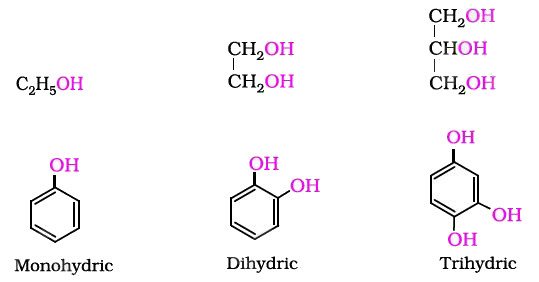
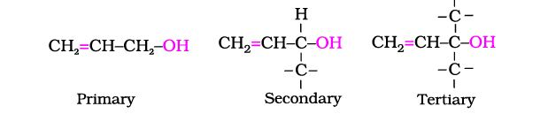
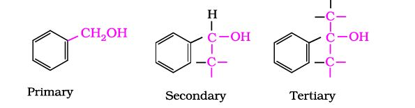
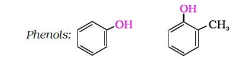

Alcohols, phenols and ethers are the basic compounds for the formation of detergents, antiseptics and fragrances, respectively.
You have learnt that substitution of one or more hydrogen atom(s) from a hydrocarbon by another atom or a group of atoms result in the formation of an entirely new compound having altogether different properties and applications. Alcohols and phenols are formed when a hydrogen atom in a hydrocarbon, aliphatic and aromatic respectively, is replaced by –OH group. These classes of compounds find wide applications in industry as well as in day-to-day life. For instance, have you ever noticed that ordinary spirit used for polishing wooden furniture is chiefly a compound containing hydroxyl group, ethanol. The sugar we eat, the cotton used for fabrics, the paper we use for writing, are all made up of compounds containing –OH groups. Just think of life without paper; no note-books, books, newspapers, currency notes, cheques, certificates, etc. The magazines carrying beautiful photographs and interesting stories would disappear from our life. It would have been really a different world.
An alcohol contains one or more hydroxyl (OH) group(s) directly attached to carbon atom(s), of an aliphatic system (CH3OH) while a phenol contains –OH group(s) directly attached to carbon atom(s) of an aromatic system (C6H5OH).
The subsitution of a hydrogen atom in a hydrocarbon by an alkoxy or aryloxy group (R–O/Ar–O) yields another class of compounds known as 'ethers', for example, CH3OCH3 (dimethyl ether). You may also visualise ethers as compounds formed by substituting the hydrogen atom of hydroxyl group of an alcohol or phenol by an alkyl or aryl group.
In this unit, we shall discuss the chemistry of three classes of compounds, namely — alcohols, phenols and ethers.
The classification of compounds makes their study systematic and hence simpler. Therefore, let us first learn how are alcohols, phenols and ethers classified?
Alcohols and phenols may be classified as mono–, di–, tri- or polyhydric compounds depending on whether they contain one, two, three or many hydroxyl groups respectively in their structures as given below:

Monohydric alcohols may be further classified according to the hybridisation of the carbon atom to which the hydroxyl group is attached.
(i) Compounds containing Csp3- OH sp bond: In this class of alcohols, the –OH group is attached to an sp3 hybridised carbon atom of an alkyl group. They are further classified as follows: Primary, secondary and tertiary alcohols: In these three types of alcohols, the –OH group is attached to primary, secondary and tertiary carbon atom, respectively as depicted below:Allylic alcohols: In these alcohols, the —OH group is attached to a sp3 hybridised carbon next to the carbon-carbon double bond, that is to an allylic carbon. For example

Benzylic alcohols: In these alcohols, the —OH group is attached to a sp3—hybridised carbon atom next to an aromatic ring. For example

Allylic and benzylic alcohols may be primary, secondary or tertiary.
(ii) Compounds containing Csp2- OH sp bond: These alcohols contain —OH group bonded to a carbon-carbon double bond i.e., to a vinylic carbon or to an aryl carbon. These alcohols are also known as vinylic alcohols.Vinylic alcohol: CH2 = CH – OH

Ethers are classified as simple or symmetrical, if the alkyl or aryl groups attached to the oxygen atom are the same, and mixed or unsymmetrical, if the two groups are different. Diethyl ether, C2H5OC2H5, is a symmetrical ether whereas C2H5OCH3 and C2H5OC6H5 are unsymmetrical ethers.